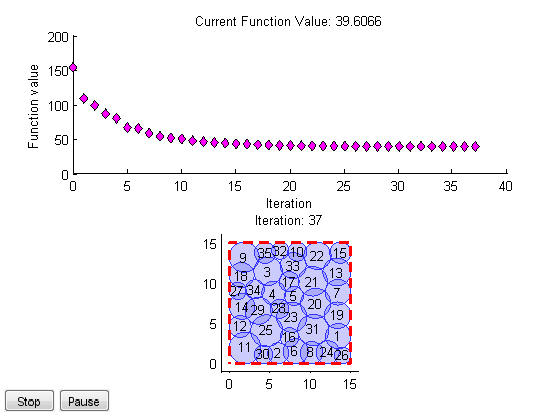
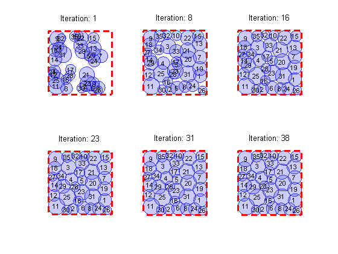

Demo script for Cell Tower Optimization Problem
This demo illustrates how you would set up and solve an optimization problem (constrained non-linear minimization).
The problem is to determine the locations of # cell towers, each having various coverage radius, so that there is maximum coverage, or minimum overlap. It is a constrained optimization problem because the cell towers are constrained to lie within a boundary. It is a non-linear optimization problem because of the non-linear objective function (overlap area as a function of # cell tower locations).
The demo is designed to show the key steps in setting up and solving an optimization problem. The details of the problem can be omitted by using predefined objective and plotting functions.
Contents
Define parameters
towers = 35; % number of towers side = 15; % dimension of piece of land (one side) seed = 5; % seed for random initial condition (not relavent to optimization
Define initial conditions
celltowersetup.m sets up the initial conditions:
dimensions.R : radius of cell tower coverage dimensions.xL : 0 % for plotting dimensions.xU : side % for plotting dimensions.yL : 0 % for plotting dimensions.yU : side % for plotting lb : lower bound values for x, y (based on the radius) ub : upper bound values for x, y (based on the radius) x0 : initial center points (x, y pairs)
[dimensions,lb,ub,x0] = helper.celltowersetup(towers,side,seed);
Run the following optimization
tic
[x,fval,exitflag,output] = helper.myOptim(x0,lb,ub,dimensions);
t1 = toc;
fprintf('Elapsed time is %0.2f seconds.\n', t1);
Elapsed time is 35.67 seconds.
Run with MATLABPOOL
Open MATLAB workers. Re-run the optimization routine to see the speedup.
matlabpool open tic [x,fval,exitflag,output] = helper.myOptim(x0,lb,ub,dimensions); t2 = toc; fprintf('Elapsed time is %0.2f seconds.\n', t2);
Starting matlabpool using the 'local' configuration ... connected to 2 labs. Elapsed time is 23.99 seconds.
Summary visualization
If you added the custom output function myOutputFcn in Optim GUI, you can get a summary visualization:
helper.plotOptimSummary(output,dimensions);
fprintf('Speed up (time serial / time parallel): %0.2f\n', t1/t2);
Speed up (time serial / time parallel): 1.49
Close MATLABPOOL
matlabpool close
Sending a stop signal to all the labs ... stopped.